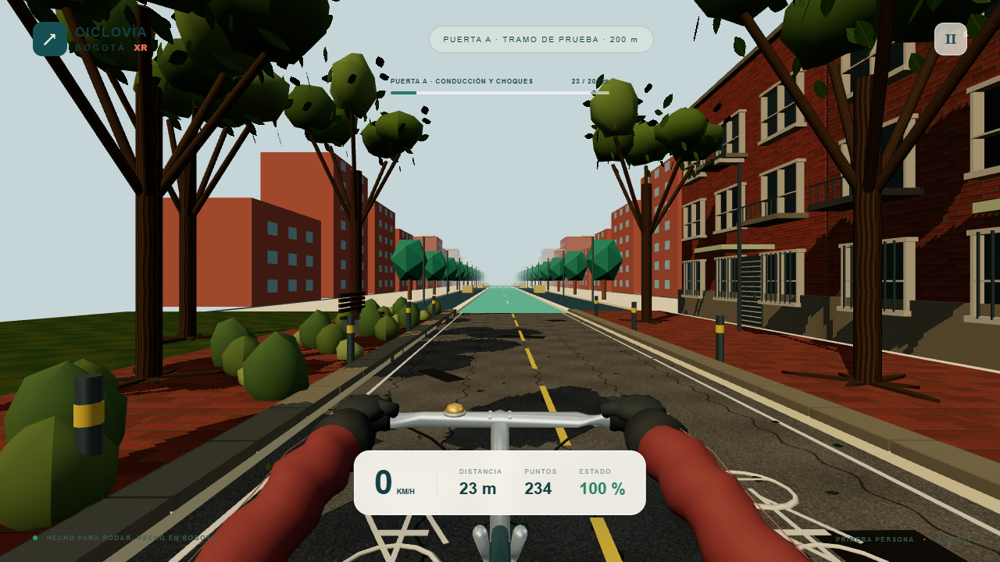
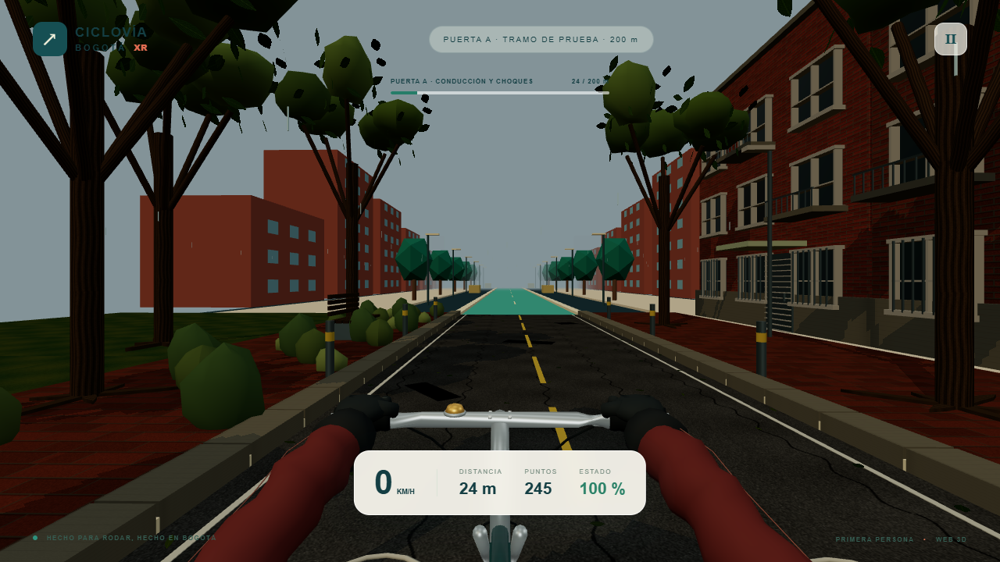

PUERTA A · MUESTRA VISUAL EN REVISIÓN
La bici, las manos y cuarenta metros de ciudad.
Muestra de 40 metros dentro del fragmento de 200 metros de Ciclovía Bogotá XR. Bicicleta y manos originales trabajadas en Blender; parque a la izquierda y fachadas a la derecha, con materiales originales, iluminación PBR y sombras estáticas.
La misma muestra con sol y lluvia




Revisión visual pendiente. Esta galería presenta material para valorar proporciones, manos sobre puños, giro, frenada, materiales, vegetación, fachadas y luz. No anuncia arte aprobado, 30 FPS comprobados ni cierre de A.
Es un prototipo estilizado: aún se perciben copas facetadas y el cambio de entorno al terminar los 40 m; con lluvia las manos se oscurecen y el encuadre vertical puede recortar sus extremos. La revisión del usuario guiará el siguiente ajuste.
La escena está inspirada en El Virrey; el trazado y los edificios no están geográficamente verificados. Actores reactivos de B, audio y rediseño de la interfaz no forman parte de esta muestra.
Teléfono físico aplazado
La prueba se mantiene aplazada hasta disponer de modelo, sistema operativo y navegador reales. Estas capturas y el vídeo no son resultados de un teléfono. La revisión visual, el laboratorio de rendimiento y la prueba física son evidencias distintas; A sigue abierta hasta su aceptación.
Juega quieto y en un lugar seguro. Nunca mientras caminas, conduces o pedaleas realmente.